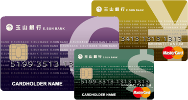

理財攻略
2015存錢出國大作戰 你不可不知的階梯式存錢
存錢不能只出一張嘴，而要落實行動，更是自我意志力的鍛鍊，「階梯式存錢法」不若冰冷的銀行帳戶，反倒是多了一份娛樂性質，如果你是月光族重症患者，建議可以揪一群同為月光仙子的朋友，一同挑戰階梯式存錢法，互相監督，若中途花用這筆存款則要請客或罰款給有徹底落實的夥伴，存錢也可以很刺激有趣！
當然如果你本身可以運用的閒錢也可以調整儲蓄的基準，從15塊、20塊起跳都可以，但依樣要照遊戲規則走，一年後殺豬公會得到莫大成就感，朝思暮想的旅行目的地也離你愈來愈近，要旅行，我們說走就走！ ....詳細全文
出國旅遊，購物吃美食逛景點一卡暢行無阻
隨著日圓及歐元貶值，請假出國度假及血拼的朋友又有一項聰明省錢的支付工具：出國使用玉山雙幣信用卡，你可依自身需求選擇美元、歐元及日圓三種幣別卡片，國內消費當然就以新台幣結算，國外旅遊時，可直接以外幣支付，消費美元、歐元及日圓更可免收國外交易服務費，刷多少就扣外幣多少，省去在國外刷卡還得換算金額的窘境！ ....詳細全文
行程攻略
跟團VS自由行 旅行方式大不同
每個人喜愛的旅行方式皆不同，有人喜歡包套行程跟團行程，只要交出護照、團費就可以翹腳捻嘴秋等出發；
有人喜歡更彈性的行程規劃，自己規劃路線、親子安排交通食宿，跟團與自由行一直以來都有各自的擁護者。
團體旅遊是指一定數量而有著共同旅行目的地的人，聚集起來一起旅行的旅遊模式。行程中都會有專業的導遊領隊作詳細解說，有問必答，絕不會發生那種一座古蹟看半天，回到家還不知道它叫什麼名字。但有個小小缺點…就是，時間被全面掌控：團體行程就是按表操課，由不得你！
自助旅行不完全依賴旅行社套裝行程的一種旅遊方式，一般是指由旅人自己安排交通、住宿以及景點行程，其中也可能透過旅行社代辦簽證、機票或是旅館預訂，但出發返回日由自己決定。不過有些國家會明令遊客透過當地旅行社才能安排旅行活動。
....詳細全文
-
如何買到便宜機票？教你6招省錢祕訣
直接跟航空公司買票一定很貴？那可不一定，除了參考機票比價網站，自己也要周旋在數個網站再一次做交叉比較，如果已經選定了幾個最實惠的航班，建議再次進入航空公司官網，看他們同樣航班是否提供了更便宜的價格，我們通常以為航空公司的票價必定比其他代售通路貴許多，不過其實航空公司會出售一些自家銷售及特殊處理的機票，而且這些訊息只會公布在其官網而非其他平台。 ....詳細全文 -
Check in! 7個飯店客房免費升等秘訣
出發前，寫封信給飯店吧！事前寫信給入住的飯店，告知本次前往入住其飯店的理由，例如慶祝生日、周年紀念日甚至計畫求婚等，除了容易獲得房間升等機會，也可能免費獲得飯店服務，例如免費SPA按摩，或是禮物驚喜。編輯曾經為了慶祝生日，旅遊期間分別入住幾家較高檔的集團酒店，除了獲得房間升級以外，還有room service送生日蛋糕到房間、小禮物、玫瑰花束以及mini bar及香檳全部免費享用，確實值得一試。 ....詳細全文 -
不可不知的飯店禮儀 小費怎麼給？
人身在外，有時候你不只是個體也代表了一個國家城市─代表自己的國家城市。因此，即使短暫佇留一個陌生城市，也試著以最友善的態度面對這裡的任何一切吧！包括入住飯店，旅人入住飯店時，除了許多入住禮儀，小費的給法也很重要。首先，提前預訂飯店，不僅確保自己抵達當地有安身的地方，也利於飯店控制房間數量。 ....詳細全文